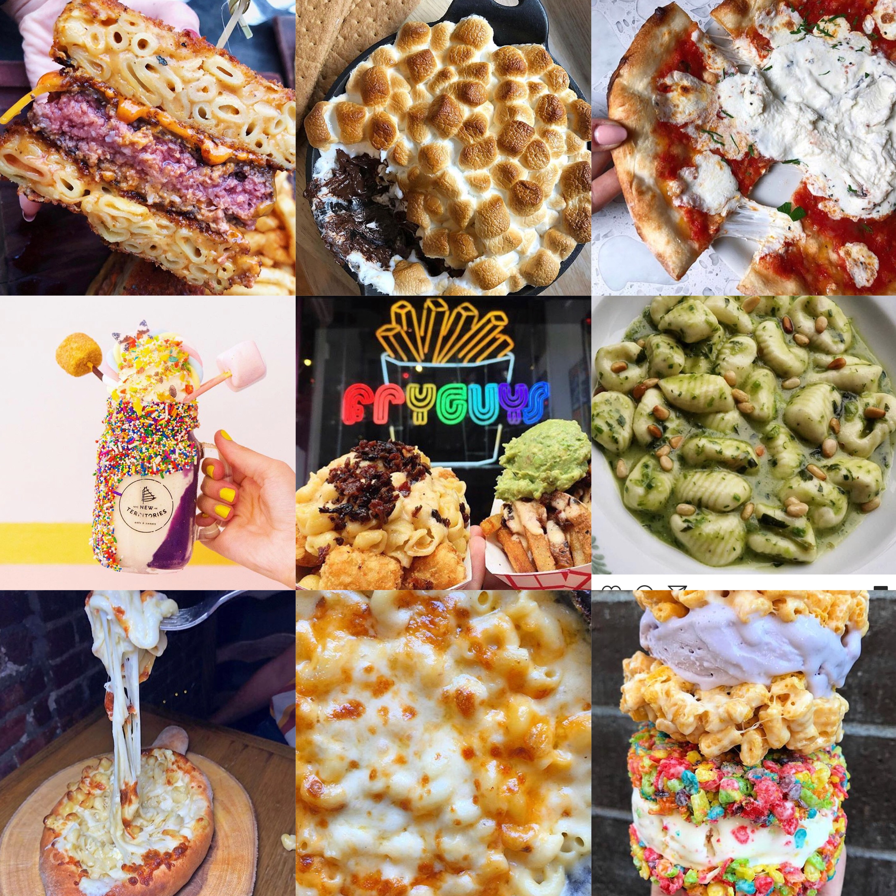

Foodie's Dream
 Hello! My name is Trinity and I have lived in NYC all my life. As I got older I wanted to explore the city more. I wanted to try out diferent foods since I am a big foodie but never knew where to go. I eventually found places but if you had the same problem this site if for you. Enjoy!
Hello! My name is Trinity and I have lived in NYC all my life. As I got older I wanted to explore the city more. I wanted to try out diferent foods since I am a big foodie but never knew where to go. I eventually found places but if you had the same problem this site if for you. Enjoy!
Food Places

S'Mac Go to S'mac
If you are a mac and cheese lover, this is the place for you! It's affordable and is a great hang out place. They have a variety of mac and cheese and different sizes!
New Territories Go to New Territories
A place filled with a ton on instagram worthy foods! Come here with a sweeth tooth and your camera ready!
DO Confections Go to DO
I know when I was younger and I would make cookies I would want to eat the leftover batter but my mom would say no for safety reasons(I ate in anyways). But here, you can eat all the cookie dough you want without health risk!
Wooden Spoon Go to Wooden Spoon
This place had the best stuffed grilled cheese I ever had. A grilled cheese with mac and cheese and chopped burger? Count me in! The environment is great and so is the food.
Black Tap Go to Black Tap
If you ever seen those big delicious shakes while scrolling through instagram, it was probably from Black Tap. They have huge shakes that has many extra added things to it and is literal diabetes but is so worth the price. Warning, the line to get into Black Tap will be long so you have to be willing to wait.
Blank Slate Go to Blank Slate
Blank Slate is a great place to get coffee, breakfast and lunch. But that isn't the reason I put them here. They have the best s'mores dip I ever tasted. It may seem smalll but its enough for two people and have some left over because it's so thick and filling.
Fry Guys Go to Fry Guys
Who doesn't love fries? This place is an amazing place to get fries, there is so much variation and is also a great place to take some pics for the gram!
Cheeseboat Go to Cheeseboat
I am a big cheese lover. This place in Brooklyn is every cheese lover's dream! Make ure to bring someone with you because you will not be able to finish it by yourself!
Macchina Go to Macchina
Big Daddy's Go to Big Daddy's
L.E.S KitchenGo to L.E.S Kitchen
Go to My Instagram
Go to My Twitter